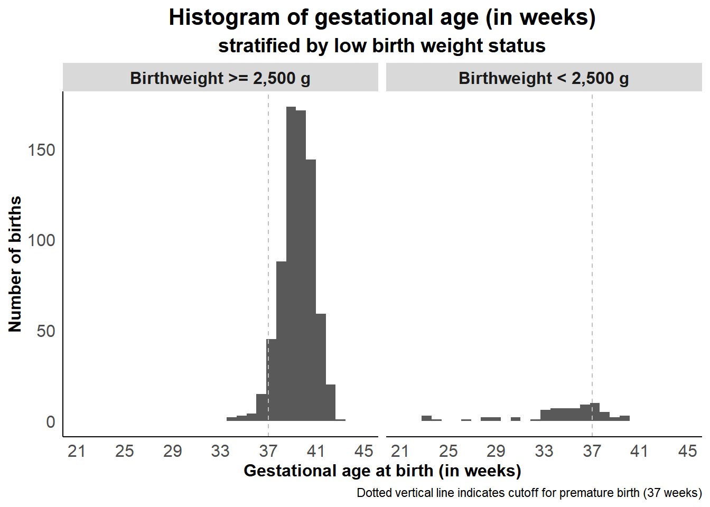
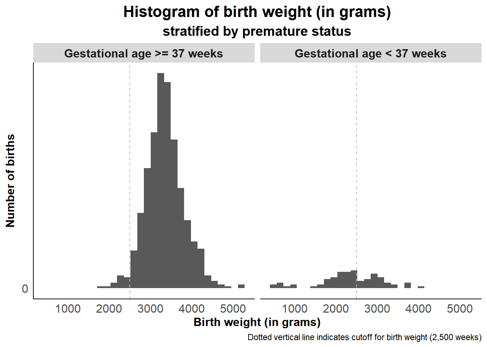
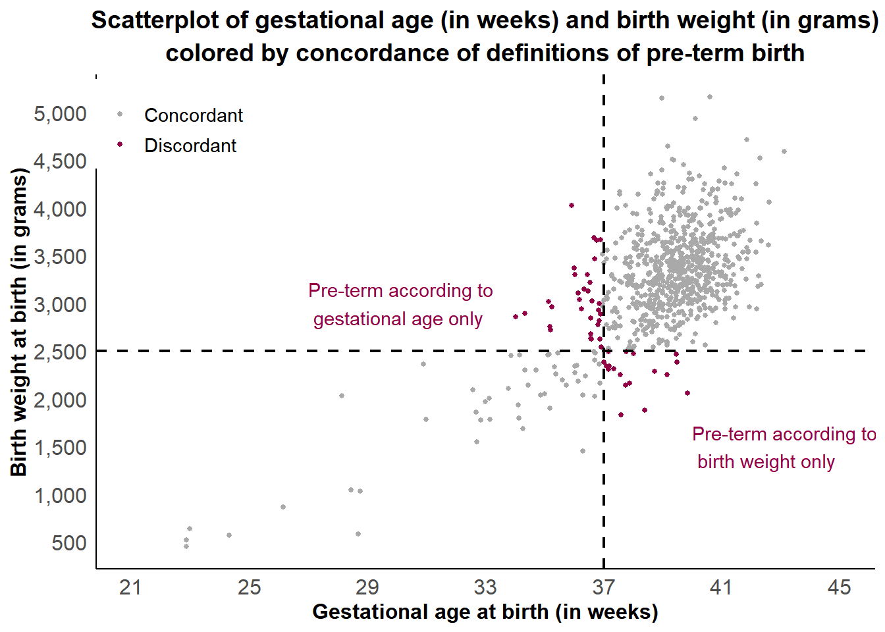

What is the level of agreement of the two definitions of pre-term birth, i.e. weight at birth < 2,500 grams and weeks of gestation at birth <37 weeks?
Intended Audience
Researchers who may be deciding to choose only one measure over the other to measure preterm birth when there are not enough study resources to do both
Weeks of gestation is much easier to measure as no other equipment is required unlike birth weight, but may be prone to recall bias if no medical records are available to check. Measuring birth weight is more objective as a scale can be used, but this scale may require more resources, such as procuring the scales across study sites and training research staff follow a standard protocol.
Data Description
We used the publicly available data set from Micalowicz et al (2006) published in the New England Journal of Medicine(Michalowicz et al. 2006), which was a multi-center randomized trial that examined whether timing of periodontal disease treatment (treatment: prior to 21 weeks gestation, control: after delivery) affects the likelihood of pre-term birth, defined as less than 37 weeks gestational age.
This is a longitudinal data set of 823 women who were 13-16 weeks gestational age at randomization, followed by five monthly visits. There are 171 variables corresponding to the exposure, outcome, and covariates collected throughout the entire study period.
The data set is currently set up in wide format, meaning each row represents one study participant, and the covariates and outcome data collected at follow-up visits are set up as separate columns. Full details on the data set, as well as the complete data dictionary are available here.
The data set is available on the Comprehensive R Archive Network (CRAN) as part of the medicaldata package, stored as the opt data frame once the package is loaded in library. The variables of interest are:
PID: Patient unique identifier (ID)
GA.at.outcome: Gestational age in days
Birthweight: Birth weight in grams
Birth.outcome: Outcome of pregnancy with four levels
Elective abortion
Live birth
Lost of FU (follow-up)
Non-live birth (i.e., stillbirth or spontaneous abortion)
Warning
The factor values have lagging spaces in the end, so we need to add an additional data processing step using the str_trim function from the stringr package (part of tidyverse) and replace the affected columns using mutate.
Analysis
We examined a simple relationship between two continuous variables: gestational age at the end of pregnancy (in days) and birth weight at time of delivery (in grams). We expect that generally, there is a positive association between gestational age and birth weight as these are two related measures for pre-term birth (Oken et al. 2003).
Pre-term births are sometimes defined by gestational age (a typical cutoff is 37 weeks), or by weight (a typical cutoff is 2500 grams).
We want to examine, visually, the level of agreement between these two definitions. We also want to calculate some agreement statistics, such as positive percent agreement and kappa statistic (Xia 2020). The formula for both statistics are found on the side.
Interpreting the kappa statistic, we use the following guide:
Data Preparation
We restricted the data to women whose pregnancies resulted to live births and were observed within the study period. The final sample size is 793 women.
We also created two new binary variables: premature for gestational age < 37 and lbw for birthweight < 2,500 g. We also created a new variable called discord that indicates whether observations are concordant or discordant based on the two definitions in aid of visualizing them later on our figures.
library(medicaldata)# The data set is stored in opt, then we call it into the environmentopt <- optlibrary(tidyverse)# Select the variables needed for the analysis# PID = patient ID# GA.at.outcome = gestational age in days# Birthweight = birth weight in g# Restrict data to live births only (Birth.outcome == "Live birth")# But clean factor values first using str_trim and apply changes using mutate# Then create premature, lbw, and concordant variablesdata <- opt |>mutate(across(where(is.factor), str_trim)) |>filter(Birth.outcome =="Live birth") |>select(PID, GA.at.outcome, Birthweight) |>mutate(premature =ifelse(GA.at.outcome <37*7, 1, 0),lbw =ifelse(Birthweight <2500, 1, 0),discord =ifelse(premature == lbw, 0, 1)) |>mutate(premature =factor(premature, levels =c(0, 1), labels =c("Gestational age >= 37 weeks", "Gestational age < 37 weeks")),lbw =factor(lbw, levels =c(0,1),labels =c("Birthweight >= 2,500 g", "Birthweight < 2,500 g")),discord =factor(discord, levels =c(0,1),labels =c("Concordant", "Discordant")))head(data)
PID GA.at.outcome Birthweight premature
1 100034 265 3490 Gestational age >= 37 weeks
2 100042 253 2350 Gestational age < 37 weeks
3 100067 266 2525 Gestational age >= 37 weeks
4 100083 271 3650 Gestational age >= 37 weeks
5 100091 280 3865 Gestational age >= 37 weeks
6 100109 275 3120 Gestational age >= 37 weeks
lbw discord
1 Birthweight >= 2,500 g Concordant
2 Birthweight < 2,500 g Concordant
3 Birthweight >= 2,500 g Concordant
4 Birthweight >= 2,500 g Concordant
5 Birthweight >= 2,500 g Concordant
6 Birthweight >= 2,500 g Concordant
We also define a custom theme for the figures:
custom_theme <-theme(panel.background =element_blank(),axis.ticks =element_blank(),axis.text =element_text(size =12),axis.title =element_text(size =12, face ="bold"),axis.line =element_line(linewidth =0.5),plot.title =element_text(size =16, face ="bold", hjust =0.5),plot.subtitle =element_text(size =14, face ="bold", hjust =0.5),strip.text.x =element_text(size =12, face ="bold"))
Results
Exploratory Data Analysis
First, we show a histogram of the values of gestational age (GA.at.outcome) by low birth weight (lbw) status, as shown in Figure 1:
ggplot(data = data, aes(x = GA.at.outcome)) +geom_histogram() +scale_x_continuous(limits =c(147, 315), breaks =seq(147, 315, 28),labels =seq(147, 315, 28)/7) +geom_vline(xintercept =37*7, linetype ="dashed", color ="gray") +facet_grid(cols =vars(lbw)) +labs(x ="Gestational age at birth (in weeks)",title ="Histogram of gestational age (in weeks)",subtitle ="stratified by low birth weight status",y ="Number of births",caption ="Dotted vertical line indicates cutoff for premature birth (37 weeks)") + custom_theme

Figure 1: Histogram of gestational age (in weeks) by low birth weight status
Similarly, we show a histogram of the values of birth weight (Birthweight) by premature (premature) status, as shown in Figure 2:
ggplot(data = data, aes(x = Birthweight)) +geom_histogram() +scale_y_continuous(breaks =seq(0, 5000, 500),labels =function(x) format(x, big.mark =",")) +geom_vline(xintercept =2500, linetype ="dashed", color ="gray") +facet_grid(cols =vars(premature)) +labs(x ="Birth weight (in grams)",title ="Histogram of birth weight (in grams)",subtitle ="stratified by premature status",y ="Number of births",caption ="Dotted vertical line indicates cutoff for birth weight (2,500 weeks)") + custom_theme

Figure 2: Histogram of birth weight (in grams) by premature status
We then bring both variables together in a scatterplot as shown in Figure 3:
ggplot(data = data, aes(x = GA.at.outcome, y = Birthweight)) +geom_jitter(aes(color = discord), size =1) +scale_x_continuous(limits =c(147, 315), breaks =seq(147, 315, 28),labels =seq(147, 315, 28)/7) +scale_y_continuous(breaks =seq(0, 5000, 500),labels =function(x) format(x, big.mark =",")) +scale_color_manual(breaks =c("Concordant", "Discordant"),values =c("darkgray", "#920045")) +labs(x ="Gestational age at birth (in weeks)",y ="Birth weight at birth (in grams)",title ="Scatterplot of gestational age (in weeks) and birth weight (in grams)",subtitle ="colored by concordance of definitions of pre-term birth") +geom_hline(yintercept =2500, linetype ="dashed", size =0.75) +geom_vline(xintercept =37*7, linetype ="dashed", size =0.75) +annotate("text", x =27*7, y =3000, hjust =0, color ="#920045",label ="Pre-term according to \n gestational age only") +annotate("text", x =40*7, y =1500, hjust =0, color ="#920045",label ="Pre-term according to \n birth weight only") + custom_theme +# Add the legend position and title font settingstheme(legend.position =c(0.1, 0.9),legend.title =element_blank(),legend.key =element_blank(),legend.text =element_text(size =11),plot.title =element_text(size =14, face ="bold", hjust =0.5))

Figure 3: Scatterplot of gestational age (in weeks) and birth weight (in grams) colored by concordance of definitions of pre-term birth
Key message: There is a fairly high level of agreement between birth weight and gestational age in defining pre-term birth. Either measure to define pre-term birth should be fine.
Using baseline data from a clinical trial of 793 women on periodontal disease and preterm birth, this analysis looked at the agreement between two measures of preterm birth: birth weight less than 2,500 g and gestational age at 37 weeks. Exploratory data analysis was done using histograms of the continuous measure of one definition stratified by the binary definition of the other, as well as a scatterplot of both continuous measures. Percent positive agreement and Kappa statistics were used to quantify the agreement. Results show a 93.7% percent positive agreement and kappa statistic of 0.63, indicating a fairly high level of agreement. Therefore, either measure to define pre-term birth may be used in future related research studies.
Michalowicz, Bryan S., James S. Hodges, Anthony J. DiAngelis, Virginia R. Lupo, M. John Novak, James E. Ferguson, William Buchanan, et al. 2006. “Treatment of Periodontal Disease and the Risk of Preterm Birth.”New England Journal of Medicine 355 (18): 1885–94. https://doi.org/10.1056/nejmoa062249.
Oken, Emily, Ken P Kleinman, Janet Rich-Edwards, and Matthew W Gillman. 2003. “A Nearly Continuous Measure of Birth Weight for Gestational Age Using a United States National Reference.”BMC Pediatrics 3 (1). https://doi.org/10.1186/1471-2431-3-6.
Xia, Yinglin. 2020. “Correlation and Association Analyses in Microbiome Study Integrating Multiomics in Health and Disease.” In, 309–491. Elsevier. https://doi.org/10.1016/bs.pmbts.2020.04.003.